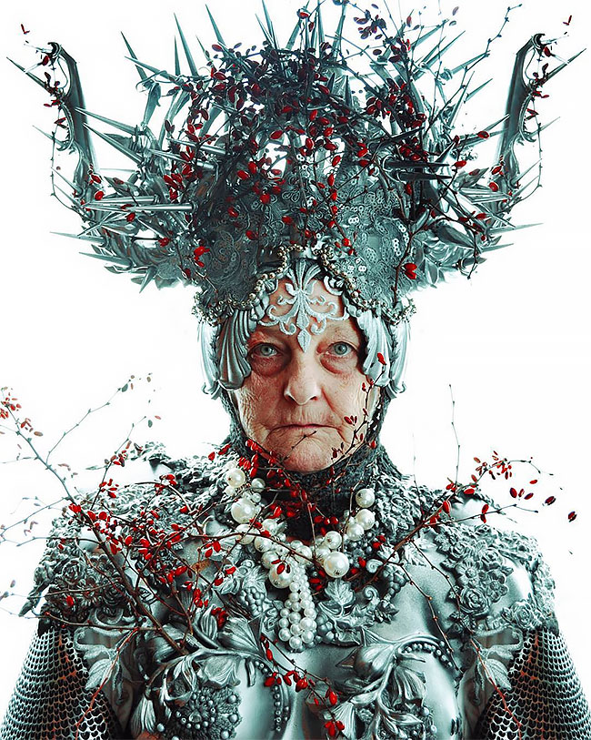
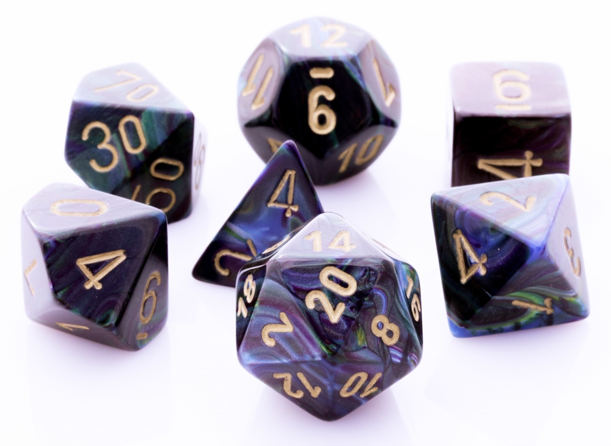

How do I make a Player Character (PC)?
You might be wondering 'HOW THE HELL DO I MAKE A PC!' Worry no more! Character creation is a fairly straightforward affair as long as you keep the proper mind set. Before diving into the statistical aspect of the game, it is important to get a rough idea of what you want to play. Perhaps you want to be a noble fighter who holds the front lines for his allies, a cheeky rogue with a heart of gold or a wizard wielding fantastical powers. You might prefer something inspired by a culture - berserker vikings known for charging into battle and druids with their deep connection to nature.
There are so many avenues for inspiration. Trust me, this is the bulk of where the work goes. Look up your favorite characters from various media if you need inspiration. Heck, look up drawings! They are amazing for getting the imagination going. What so they look like? Are they strong? Smart? Awkward? Think of a hook for your character and branch out from there. You don't need to have all the answers now. Just enough to give you ground to stand on.
Image property of Marcin Nagraba
Once you have a character in mind, it is time to start building them using the framework to guide your choices. The first thing you will need is a character sheet. A quick search of '5e character sheet' will net you a plethora of options. You can find the basic sheet by going to Wizards of the Coast.
1. Choose a Race.
If you've decided on a PC with a rugged apperance who charges into battle, you might consider a half-orc. Orcs a known to be firce warriors, extremely tough and often portrayed to at home in battle. You could also flip the script by exploring a half-orc who steers clear of these stereotypes. Every race has some lore associated with them. for a full list of races you can visit the races section of the Wizards of the Coast website.
2. Choose a Class.
Think of a class as similar to a job. The four archetypical classes are the fighter, the rogue, the wizard and the cleric. From order of listing, these are great for first time players. The figher is tough and combat orientated. The rogue had a broad range of skills. The wizard uses years of study to bend magic to their will while the cleric gets access to magic from a diety. You can find a full list of classes
3. Choose a Ability Scores.
Abilities are the six building blocks of any character. It is a simplified representation of their capabilities. They are:
- Strength : how strong a character is.
- Dexterity : how graceful and dextrous a character is.
- Constitution : how hardy a character is.
- Intelligence : how much intelligence or book learning a character has.
- Wisdom : how much common sense a character has.
- Charisma : a character's force of personality.
There are different ways of generating ability scores but for this we will be using the default ability array which is: 15, 14, 13, 12, 10, 8. The higher the number the better they are at the associated ability score. There will be plenty of times during gameplay where the Game Master will present a challenge. These are often resolved using ability scores. You can learn more on ability scores here
4. Decide on a Background.
This is a chance to think more about where your character comes from and what their experiences are. They could have been a soldier who decided they were done playing the part of grunt. They can even be a travelling merchant! Backgrounds in D&D come with a few perks. They give you access to skills, languages and even tool proficiency to reflect their experiences. Once again, we can find an exhaustiv list over at Wizards!
5. Shiny rocks go clik-clak.
You've got enough to play! Now you just need a set of dice. Meet with your fellow players, introduce your PC and get ready for an adventure!
